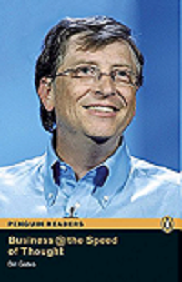

1.Peguin Readers 6:Business @ Speed of Throught Book & CD Pack
Autor:Bill Gates
La informacion es la nueva herramienta empresarial y puede viajar a la velocidad del pensamiento. Bill Gates, en este fascinante libro, explica los negocios en el siglo XXI.

Imagen de libro
2.Como evitar un desastre climatico
Autor:Bill Gates
En este libro tan necesario y riguroso, Bill Gates expone un plan amplio, funcional y, sobre todo, asequible, para reducir a cero las emisiones de los gases causantes del efecto invernadero y evitar a tiempo una catástrofe medioambiental.